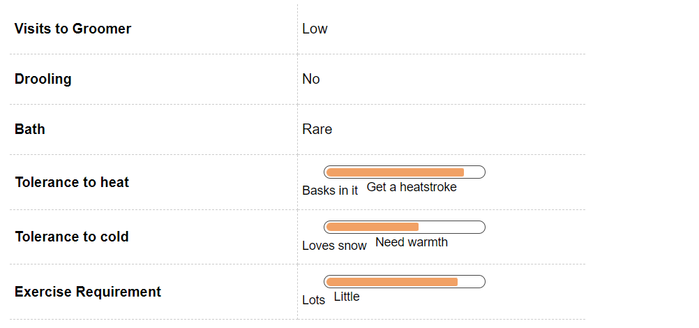
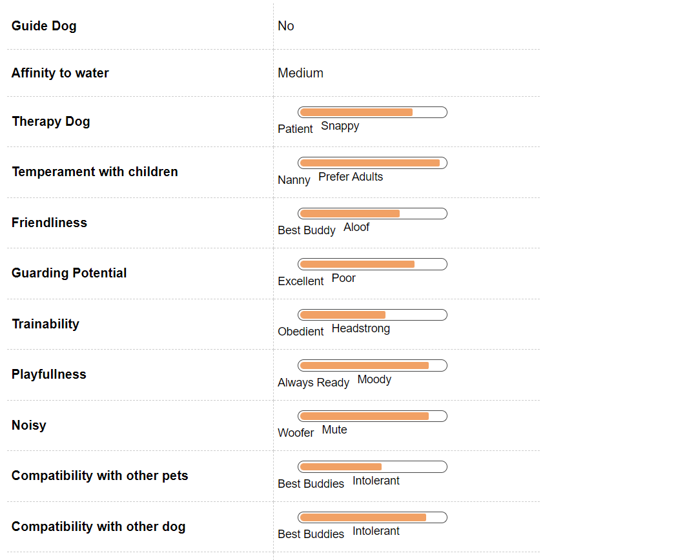
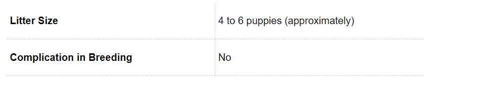
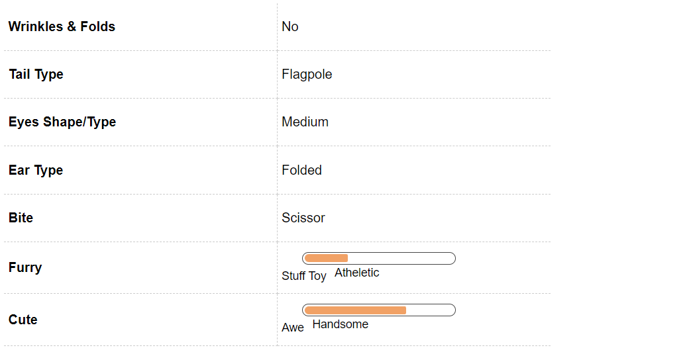

Beagle Dog Breed Information
Introduction
One of the most adorable and popular breeds in the world, a Beagle is a member of the scent hound family. The name Beagle has been derived from the French word Beguele, meaning deep throat.
English Beagles are small, compact and extremely healthy a breed and make wonderful companions and family dogs. One of the most famous Beagle has been Charles M Schulz.
History
Though their history is a little lost, Beagles have been popular in the Middle Ages, Renaissance and even the early Roman Times.It has been noted that William the Conqueror brought Talbot Hounds to England during the Norman Conquest in the early 11th century.The first Beagles date back to the 1500s.
The breed probably originated as a cross between the Harrier and other types of English hounds.
Beagles gained popularity in England during the reigns of Edward II and Henry VII and later in the 1700s, they lost a bit of their popularity to Fox Hounds especially when it came to the popular sport of the time - Fox Hunting. In the 1800s American breeders imported Beagles from England and were used for hunting rabbits and hares.
The American Kennel Club began registering and recognising Beagles as a breed in 1884 as well as the National Beagle Club was formed and began functioning.
Unique Aspects
Beagles are one of the most beloved breeds in the world and it is often difficult to escape of the charming and upbeat temperament of a Beagle’s beautiful eyes and expressions. Happy, outgoing, social and loving, Beagles make excellent family pets and make friends with the turn of their head.
Since they belong to the Hound family, Beagles are extremely inquisitive and are always on a search for an interesting trail to pursue.
Compared to the 5 million scent receptors found in a human nose, a Beagles nose is blessed with over 220 million scent receptors. This is one of the reasons that Beagles make such wonderful hunters and sniffer dogs as they can recognise and remember the scents.
Beagles are known for their loud vocalisations and are probably the only breed that have three distinct vocalisations - a bark or a growl, a baying howl and a half baying howl. Beagles may bark regularly but when out hunting, the sight of a hunt can make start the baying howl.
The half baying howl may be reserved when Beagles need attention or are simply bored or sad. Due to their loud howls, Beagles may not make one of the best apartment pets.
Fun Trivia

Beagles are the perfect looking pets and have been a part of many movies and are also quite famous in the celebrity world. One of the most famous Beagles of all time is Snoopy. After all this is one of the most read comic strips.
Here is a small list of movies and celebrities that you share your pet with among many.
Vital Stats:
Dog Breed Group:
Hound Dogs
Height:
19 - 22 Inches
Weight:
10-15 Kg
Life Span:
13 to 14 years
Pros and Cons
| Pros |
Cons |
|
Friendly with children as well as adults
|
One of the most difficult breeds to train
|
|
Easy to groom, does not require much effort
|
Certainly not for the first time owners
|
|
One of the most healthiest breeds around
|
Can bark obsessively at times
|
Beagle Maintenance & Effort

Grooming
Beagles make excellent family pets and are easy to maintain and groom. Beagles have a smooth, dense double water resistant coat that requires brushing to remove dirt and encourage blood circulation and hair growth.
Even though Beagles shed, their short fur makes it go unnoticed.
Since Beagles tend to be extremely inquisitive about their surroundings and love to explore with their nose, they tend to get dirty real fast.Many a times, if they find an interesting smell, don’t be surprised if they rub themselves to get the scent on them.
Regular baths to keep them clean would be required, especially if they play or spend time in grass or a yard.
Beagles have long ears as a result of which the air does not circulate well inside their ears. As a pet parent you would have to check and clean their ears regularly to avoid wax buildup or ear infections.
Brushing the teeth and trimming the nails will also make up an important part of the grooming regime for your Beagle. Also, while grooming, check for dry or flaky skin or sores or inflammation of skin, and if you notice any such symptoms, seek veterinary help to avoid potential health problems.
Beagle Hair & Coat

Beagle Health & Care
Common Health Issues
Beagles are considered to be one of the sturdiest and healthiest dog breeds and very rarely any serious problem or health issue may inflict them. However, some of the common disorders that may affect your Beagle are:
Beagle Pain Syndrome or Steroid Responsive Meningitis-
Beagle Pain Syndrome or Steroid Responsive Meningitis is one of the most difficult neurological disorders that inflict your dog. A rare combination of meningitis and polyarthritis, this disorder can be extremely painful for the dog.Cervical pain, weakness, body pain, severe muscle spasms and loss of appetite are some of the common symptoms of Beagle Pain Syndrome.
Epilepsy -
Epilepsy is another disorder that may inflict Beagles. Beagles may experience mild or severe seizures followed by frantic and abnormal behaviour such as running or falling or even being unable to move their limbs. No real cause of epileptic seizures is known.
Hypothyroidism -
Hypothyroidism is a malfunction of the thyroid gland and cause alopecia / hair loss, skin infections and poor development. Medical help will have to be sought for proper diagnosis and cure.
Cherry Eye-
Cherry Eye is a condition where the gland under the eye protrudes and looks like a cherry. In case of a cherry eye, surgery will be required to remove the infected gland.
Glaucoma -
Glaucoma is another disorder that may inflict a beagle. In case of a glaucoma, the pressure in the eye increases manifolds as a result the disorder is extremely painful for the dog. In case medical intervention is not taken in time, the increased pressure may damage the eye and the optic nerve rendering the Beagle blind.
Before getting a Beagle, do check on the medical history of its parents to be sure that there is no genetic disorder that your new puppy might be suffering from.
Beagle Behavior

Temperament
Beagles have an even temper and a gentle disposition and are friendly, happy breed. Beagles are an extremely good with families,kids and even other dogs and love company, though they can develop separation anxiety if left alone for long periods. Like all dogs, pet parents will have to socialise their Beagles pups from early on.
Beagles are an intelligent breed and a little stubborn one as they are easily distracted by scents around them. Beagles are also high on stamina and energy and require mental and physical stimulation.
Regular exercise and Pet parents to a Beagle will have to be patient and use food as a reward to training as Beagles are extremely eager to please and love food. Beagles are easily bored and distracted so will have to be trained to keep them busy.
Regular exercise will keep them healthy and away from become obese.
Environment
A beagle is apt for apartment living as well as for large houses. Large houses will ensure that your pet beagle has a lot of space to explore and stimulate his / her sense of smell.
For small apartments, Beagle work great because of their small and compact size.
However, pet parents who are living in apartments will have to ensure that there is a regular exercise regime so that their pet does not become hyperactive or destructive.
Beagles are extremely loud dogs and have a characteristic howl. If you live in apartments, your neighbours might object to the loud howling at unusual hours.
Also, you will have to be careful when you take your Beagle out for a walk. Since they are easily excited by new scents, they tend to wander off exploring, many a times on their own.
If you have a house with a yard, you will have to ensure that there is a fence that cannot be dug under else you will be forever running after your pet Beagle to stop its explorations.
Training & Intelligence
Beagles are a very intelligent breed. Their excellent sense of smell combined with athleticism and stamina have historically made them excellent hunting dogs and as time progressed their contribution as working dogs has increased by leaps and bounds.
Currently, Beagles have been trained to assist as bomb detection dogs. In many airports Beagles and their keen sense of smell is being used to detect contraband food articles i.e. food articles that are banned in certain countries.
Beagles are also being trained to sniff termites and bed bugs especially in Australia where the infestation is known to destroy assets and infrastructure worth thousand every year. Due to their small and compact size and passive nature Beagles are also trained to be service and therapy dogs.
Amsterdam’s Schiphol Airport has recently employed a Beagle to help their Lost and Found department return possessions to their rightful owners.
Beagle Breeding

Procreation
Beagles are a healthy and sturdy breed and become mature by the age of 16 - 18 months. If you are going to mate and breed your Beagle, make sure that you understand thoroughly the medical histories of his / her mating partner and also the medical history of the beagle’s parents so make sure that they are not suffering from any serious genetic disorder that may be deterrent to the overall growth of the new puppies.
If you are a first time pet parent, seek medical advice to ensure that the mating and breeding process is comfortable for both the dogs.
A dog takes around 18 months to reach his or her full height and structure. It is advisable to breed your dogs after at least two years of age. If you are a first timer at breeding then taking a vets help is advisable. You just sit back and enjoy the company of four to six adorable little puppies. An average litter size of the breed. Though one of the most common color of a Basset is triumvirate of tan, black and white but there are other colors as well such as white and lemon. You can have more than one color in the same litter.
Puppies
An average litter size of a Beagle varies between 2 - 7 puppies with an average life expectancy of 12 - 14 years. When born, the Beagle puppy may not show its characteristic fur markings. As they grow older, the markings become more prominent.
When the puppies are born, it will be imperative to vaccinate them and to train them from early own as they are extremely active and if not monitored may destroy furniture and other things that might catch their attention.
Beagle Appearance

Body
A full grown adult male Beagle stands anywhere between 36 - 41 cms and weighs between 10 - 11 kgs while a fully grown female Beagle weighs stands anywhere between 33 - 38 cms and weighs between 9 - 10 kgs.
The most common colour for a Beagle is a tri - colour i.e a black or dark brown saddle, white legs, chest and belly and a straight tail. the tip of the tail is usually white while the base may be shades of black and brown.
Beagles have a short and dense coat and short legs. The paws have soft pads that help the Beagle move swiftly while hunting.
The ears and the nose of a Beagle are its most distinctive feature. The ears are long and droopy while the nose is black or dark brown.
The nose and ears work in sync, the ears help trap the scent and help the Beagle in tracking. The nose and ear of a Beagle are also called Batman and Robin.
The eyes of a Beagle are shades of brown, but usually a beautiful hazel colour eye is a trademark of a Beagle.